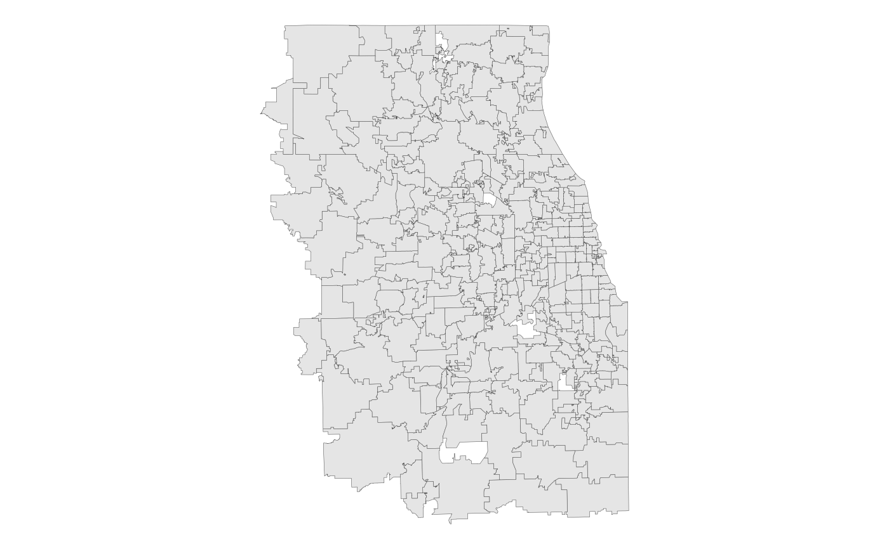

The Census ZCTAs covering the 7-county Chicago Metropolitan Agency for Planning (CMAP) region. From the US Census Bureau's TIGER/Line shapefiles, 2019 vintage.
zcta_sf
A multipolygon sf object with 316 rows and 3
variables:
Unique 5-digit ZCTA ID, corresponding to a 5-digit USPS ZIP Code. Character.
Area in square miles. Double.
Feature geometry. sf multipolygon.
US Census Bureau TIGER/Line
Census Bureau description:
ZIP Code Tabulation Areas (ZCTAs) are approximate area representations of U.S. Postal Service (USPS) five-digit ZIP Code service areas that the Census Bureau creates using whole blocks to present statistical data from censuses and surveys. The Census Bureau defines ZCTAs by allocating each block that contains addresses to a single ZCTA, usually to the ZCTA that reflects the most frequently occurring ZIP Code for the addresses within that tabulation block. Blocks that do not contain addresses but are completely surrounded by a single ZCTA (enclaves) are assigned to the surrounding ZCTA; those surrounded by multiple ZCTAs will be added to a single ZCTA based on limited buffering performed between multiple ZCTAs. The Census Bureau identifies five-digit ZCTAs using a five-character numeric code that represents the most frequently occurring USPS ZIP Code within that ZCTA, and this code may contain leading zeros.
There are significant changes to the 2010 ZCTA delineation from that used in 2000. Coverage was extended to include the Island Areas for 2010 so that the United States, Puerto Rico, and the Island Areas have ZCTAs. Unlike 2000, when areas that could not be assigned to a ZCTA were given a generic code ending in "XX" (land area) or "HH" (water area), for 2010 there is no universal coverage by ZCTAs, and only legitimate five-digit areas are defined. The 2010 ZCTAs will better represent the actual Zip Code service areas because the Census Bureau initiated a process before creation of 2010 blocks to add block boundaries that split polygons with large numbers of addresses using different ZIP Codes.
Data users should not use ZCTAs to identify the official USPS ZIP Code for mail delivery. The USPS makes periodic changes to ZIP Codes to support more efficient mail delivery. The ZCTAs process used primarily residential addresses and was biased towards ZIP Codes used for city-style mail delivery, thus there may be ZIP Codes that are primarily nonresidential or boxes only that may not have a corresponding ZCTA.
# Display the ZCTAs with ggplot2 library(ggplot2) ggplot(zcta_sf) + geom_sf(lwd = 0.1) + theme_void()